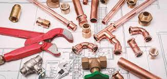

هي حرفة تركيب نظام أنابيب المياه في المباني لتوزيع مياه الشرب والتدفئة والصرف الصحي. والسباك أو السمكري هو الشخص الذي يقوم بتركيب أو إصلاح أنظمة الأنابيب وتركيبات السباكة والمعدات مثل سخانات المياه. وتُعد صناعة السباكة جزءًا أساسيًا من كل اقتصاد متطور نظرًا للحاجة إلى الحصول على مياه نظيفة وجمع النفايات ونقلها بشكل سليم
ويطلق اسم السبّاك أو الرّصّاص و"المواسيري" على من يصنع الأنابيب والمواسير لهذا الغرض من الرصاص، وما زال اسم السمكري يطلق على من يصنع الأواني المنزلية والصناعية من الصفائح المعدنية بتشكيلها وقصها ولحمها.
اعتمدت شبكات المياه في العصور القديمة على الجاذبية لتوريد المياه، وذلك باستخدام أنابيب أو قنوات مصنوعة عادة من الطين أو الرصاص أو الخيزران أو الخشب أو الأحجار. واستخدمت جذوع الأشجار الخشبية المجوفة المصفحة بأشرطة فولاذية لأنابيب السباكة، وخاصة شبكات المياه. واستخدمت جذوع الأشجار لتوزيع المياه في إنكلترا منذ ما يقرب من 500 عام. وبدأت مدن الولايات المتحدة باستخدامها أيضًا في أواخر القرن الثامن عشر وفي القرن التاسع عشر. وفي يومنا هذا، تصنع أنابيب توريد المياه من الفولاذ والنحاس والبلاستيك؛ ومعظم أنابيب الصرف تصنع من الفولاذ والنحاس والبلاستيك، وحديد الزهر. يطلق على الأقسام المستقيمة من أنظمة السباكة الأنابيب أو المواسير. وتصنع الأنابيب عادة بالسبك أو اللحام أو البثق. الأنابيب المصنع بالسبك أو اللحما تكون سميكة الجدران وقد تكون ملولبة أو ملحومة، في حين أن المواسير المصنعة بالبثق تكون عادة رقيقة الجدران وتتطلب تقنيات خاصة لوصلها مثل اللحام بالنحاس أو معدات تركيب الأنابيب بالضغط ، أو بالثني (التغضين). وتوصل الأنابيب البلاستيكية بلحام بالمذيب.
تتضمن معدات السباكة أجهزة غالبًا ما تكون مخفية داخل الجدران أو في الأماكن المخصصة للمرافق والتي لا يراها عامة الناس. وتتضمن هذه المعدات عدادات المياه أو المضخات وصهاريج التخزين وحواجز الارتجاع ومرشحات المياه ومصابيح التعقيم بالأشعة فوق البنفسيجية ومطهرات المياه وسخانات المياه والمبادلات الحرارية والمقاييس وأنظمة التحكم. تتضمن أدوات السباكة المتخصصة مفاتيح ربط الأنابيب والكماشات وأدوات الربط مثل مشاعل اللحام وأدوات الثني. وتم تطوير أدوات جديدة لمساعدة السباكين على إصلاح المشاكل بشكل أكثر كفاءة. على سبيل المثال، يستخدم السباكون كاميرات فيديو لفحص التسربات أو المشكلات غير الظاهرة كما يستخدمون الطائرات المائية ومضخات هيدروليكية عالية الضغط متصلة بكابلات من الصلب لاستبدال خط المجاري.
طرق ومواد عزل خزانات المياه الخرسانية من الداخل والخارج لابد من الاهتمام بتنظيف خزانات المياه واستخدام أفضل المواد واتباع أحدث الطرق، ويجب العناية عند اختيار الشركة التي تقوم بأداء هذه المهمة، نظرًا لأهمية المياه واستخدامها في كافة الأمور اليومية لذلك تقدم شركة الصالحية طرق ومواد عزل خزانات المياه الخرسانية من الداخل والخارج لحماية أفراد المنزل من الإلحاق بأي ضرر ينتج من تلوث المياه.
يوجد طرق ومواد عزل خزانات المياه الخرسانية من الداخل والخارج حيث يجب ضرورة عزل خزانات المياه عن جميع المؤثرات الخارجية مثل الضوء والحرارة أو حدوث تسرب مائي، وكل ذلك لتجنب أي تفاعلات كيميائية تنتج عن امتزاج أي من تلك المؤثرات مع بعضها البعض، مما يؤدي إلى إحداث مشكلات خطيرة ، إلى جانب فقد المياه للكثير من عناصره الأساسية وبما أننا نخص بالذكر الخزانات الخرسانية، فينبغي العلم بأنها عبارة عن منشأة تريد متابعة بصفة مستمرة للتحقق من عدم تواجد أي ثغرات أو فتحات بداخله، أو رطوبة التي من شأنها تعمل على تسريب المياه. ويعد تسريب المياه أمر في غاية الخطورة، بسبب كم المخاطر التي قد تحدث في أساسه، ويؤدي إلى دماره وتلفه، ولذلك يجب ضرورة اختيار عامل بناء الخزان بعناية شديدة، حتى يكون قادرًا على فهم كافة الأمور الخاصة باستخدام مواد العزل التي تمنع أي ضرر بالمياه حفاظًا على الصحة العامة و للتحقق من منع أي أضرار أو مخاطر من المحتمل أن تحدث، عليك التحقق من فحص العازل ومدى جودته الذي سيستخدم عند عملية عزل خزان المياه من أي مؤثرات خارجية. كما أن عزل خزانات المياه يساهم في شدة تحمل الخزان لأي مسببات مناخية مفاجئة، ويساهم في التأقلم على تنوع درجات الحرارة من حيث انخفاضها أو شدتها.
تنقسم أنواع العزل إلى عزل إيجابي وعزل سلبي، العزل الإيجابي يقوم بفصل المياه عن المادة الخرسانية بشكل كامل. العزل السلبي: لا يتم اللجوء إليه إلا إذا لم ينجح العزل الإيجابي في عملية العزل، حيث يتم العزل من الجانب المقابل لمكان خروج المياه، ويعد الخزانات الخرسانية من أشهر الأنواع التي يتم فيها العزل الداخلي.
يوجد الكثير من طرق ومواد عزل خزانات المياه الخرسانية من الداخل والخارج لكي تتم عملية العزل بشكل جيد وسليم ويجب اختيار مادة العزل بحيث يصعب اختراق المياه وكذلك منع تفاعلها مع المياه، وذلك لتفادي أضرار جسيمة ومشاكل صحية كثيرة تؤثر بالسلب على الإنسان، لكثرة استعمال المياه الموجودة بالخزانات في الشرب. ومن أحسن المواد المستعملة لعزل خزانات المياه من داخلها هي:
ترميم المنازل بدون تكاليف إضافية وبأفضل ادوات واسرع وقت حيث تعد من الأشياء التي تقلقنا وتثير الرهبة والتوتر والقلق فى قلوبنا هي تواجد تشققات وشروخ بجدران المنزل، ونسعى دائما لحلها بأسرع الطرق، لكن كثيرًا ما نخشى من تكاليف الإصلاح والترميم، حيث أنه من المعروف أن تكاليف ترميم المنازل عالية جدًا، لذلك تقدم شركة أركان الاكتساب بالرياض أسعار مميزة جدًا وفي متناول الجميع وبدون تكاليف إضافية، علي ان يتم الترميم بأعلى جودة ممكنة وعلى أيدي متخصصين وخبراء في مجال الترميم